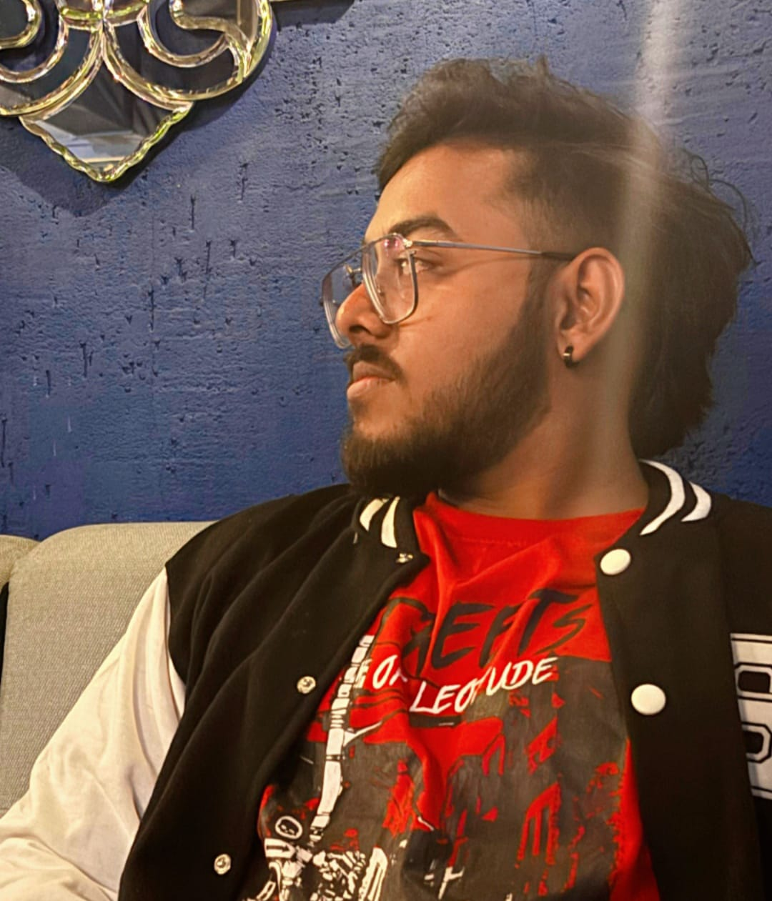

Raja Pramanik

Summary
I am a dedicated and solution-focused Web Developer with a strong foundation
in front-end technologies.With experience in developing responsive, user-friendly
websites and web applications, I bring proficiency in HTML, CSS, JavaScript,
and frameworks like React and Node.js.I thrive in collaborative environments,
enjoy solving complex problems, and am passionate about writing clean,
efficient code that enhances user experience and performance. Eager to contribute
to innovative projects and grow within a dynamic development team.
Education
- B.Tech-College of Engineering Bhubneshwaar
- 12th-DD.Autonomous College Keonjhar
- 10th-St.Mary's School Barbil
Skills
Technical Skills
- html,css,javascript
- React.js
- Responssive Design(flex box,grid)
- Tailwind CSS
- Version control-Git,Github
Soft Skills
- Problem Solving
- Debugging and Testing
- Collabrative with good communication skills
- Time Management
- Adaptibility and willingness to learn
Achievements
- Represented College in Inter state Cricket Tournament in 2023
- Organised a Tech Fest in our colle
- Represented in a Science Exhibition and came 2nd in school in 2016
My Hobbies
Contact Me